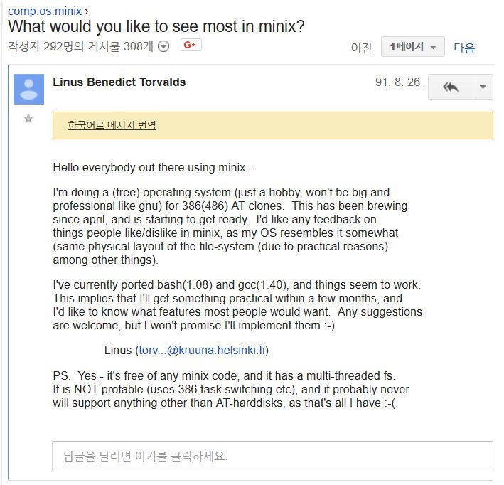
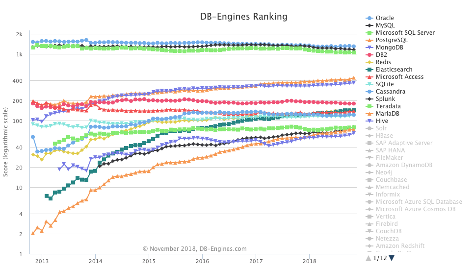
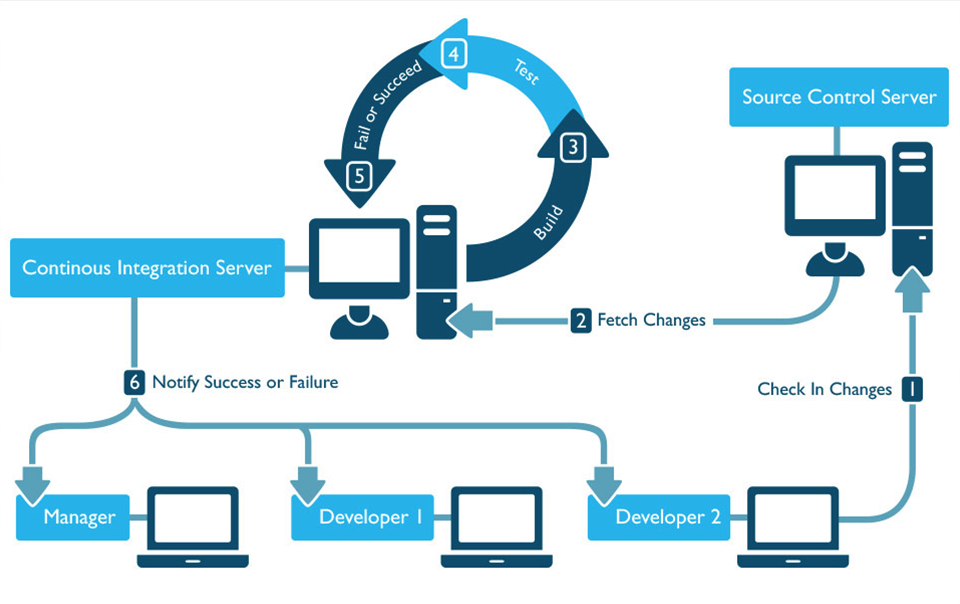
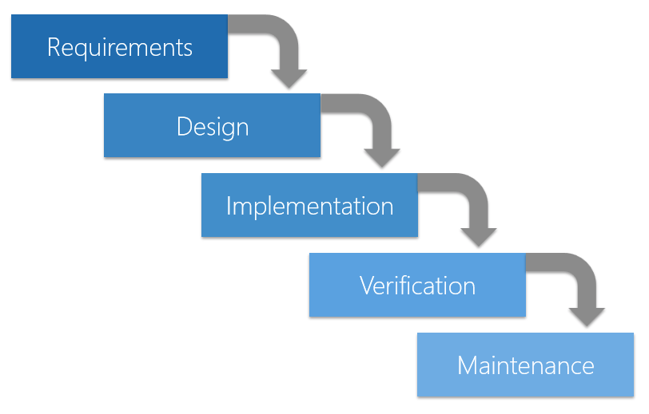
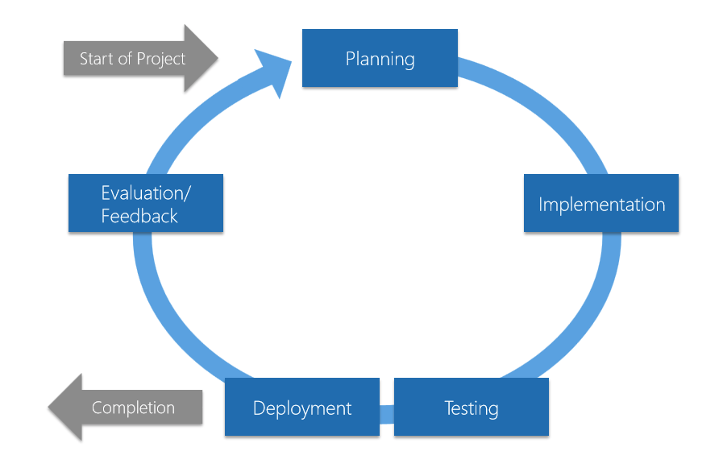
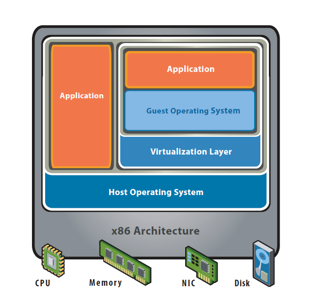

최근 클라우드 관련 부서로 옮겨 클라우드 관련 업무를 맡게 되었습니다. 그동안 개발은 했어도 인프라 지식은 많지 않은 상황에서 업무를 하다보니 어려운 부분이 있어 인프라 기초를 정리해봅니다.
IT Infrastructure
IT 인프라란 애플리케이션을 가동시키기 위해 필요한 하드웨어나 OS, 미들웨어, 네트워크 등 시스템의 기반을 말합니다. 시스템의 요구사항이라고 하면 먼저 해당 시스템이 어떤 기능을 하는지, 무엇을 할 수 있는지를 생각하게 됩니다. 이를 기능적인 요구사항(functional requirement)이라고 합니다. 이외에 시스템의 성능, 안정성, 확장성, 보안 등과 같은 요구사항을 비기능적인 요구사항(non-functional requirement)라고 합니다. 인프라는 이런 비기능적인 요구사항과 관련이 있습니다.
개발자가 왜 인프라를 알아야 할까?
예전에는 애플리케이션 개발은 업무 지식 그리고 프로그래밍과 테스트 스킬을 갖춘 애플리케이션 엔지니어가 담당하고 환경 구축은 네트워크나 하드웨어를 잘 아는 인프라 엔지니어가 담당했습니다. 그런데 데이터센터나 서버실에 서버를 두고 직접 관리하던 온프레미스(On-premise) 방식에서 가상의 서버를 여러 대 띄우는 클라우드 방식으로 옮기게 되었습니다.
이런 분산 환경에서는 인프라 엔지니어가 수동으로 관리하는 대신 자동화된 툴을 사용해서 오케스트레이션(orchestration)합니다. 따라서 인프라 엔지니어도 자동화를 위해 코드를 작성하는 능력이 필요하게 되었습니다. 또한 애플리케이션 엔지니어도 지금까지 인프라 엔지니어의 업무였던 환경에 대한 배포나 테스트 등을 직접 할 수 있게 되면서 인프라 관련 기초 지식이 필요하게 되었습니다.
인프라 구성 요소
인프라를 이루는 구성 요소들은 다음과 같습니다.
- 하드웨어(Hardware, HW): 서버 장비 본체나 데이터를 저장하기 위한 스토리지, 전원 장치 등입니다. 넓은 의미에서는 이런 하드웨어를 설치하는 데이터 센터의 설비(건물, 공조, 보안 설비, 소화 설비 등)도 포함됩니다.
- 네트워크(Network) : 사용자가 원격으로 접근할 수 있도록 서버를 연결하는 도구들입니다. 라우터, 스위치, 방화벽 등 네트워크 장비와 이를 연결하는 케이블 배선 등이 있습니다. 사용자가 단말에서 무선으로 연결할 때 필요한 액세스 포인트(Access Point, AP)도 있습니다.
- 운영체제(Operating System, OS) : 하드웨어와 네트워크 장비를 제어하기 위한 기본적인 소프트웨어입니다. 리소스나 프로세스를 관리합니다.
- 클라이언트 OS : 사용자가 사용하기 쉽도록 하는데 초점을 맞추고 있습니다(Windows, macOS 등).
- 서버 OS : 시스템을 빠르고 안정적으로 실행하는데 초점을 맞추고 있습니다(Linux, Unix, Windows Server 등).
- 미들웨어(middleware) : 서버 상에서 서버가 특정 역할을 하도록 기능을 제공하는 소프트웨어입니다.
온프레미스와 클라우드
온프레미스 On-premises
온프레미스는 데이터 센터나 서버실에 서버를 두고 직접 관리하는 방식입니다. 전통적이고 지금도 널리 사용되는 방식이죠. 집에 개인적으로 NAS나 서브 PC로 작은 서버를 돌리는 분들도 있는데 이런 것도 온프레미스라고 볼 수 있습니다. 이런 환경에서는 서버, 네트워크 장비, OS, 스토리지, 각종 솔루션 등을 직접 사서 설치하고 관리해야 했습니다. 물론 직접 관리하는 것의 장점도 있습니다. 하지만 이런 장비들은 상당히 고가이기 때문에 초기 투자 비용이 크고 이후 사용 예측량을 가늠하기가 힘들며 한번 구축해놓으면 사용량이 적어도 유지 비용은 그대로 나간다는 단점이 있습니다.
퍼블릭 클라우드 Public Cloud
인터넷을 통해 불특정 다수에게 서비스 형태로 제공되는 시스템입니다. AWS(Amazon Web Service), Microsoft Azure, GCP(Google Cloud Platform) 등 클라우드 프로바이더가(제공자)가 데이터 센터와 인프라를 보유하고 있습니다. 서비스 형태라는 건 사용자는 원하는 옵션을 선택하고 사용한만큼 비용을 지불하면 된다는 걸 말합니다. 제공하는 서비스에 따라 IaaS, PaaS, SaaS 등으로 나눌 수 있습니다. 이 중 IaaS는 원하는 사양의 가상 머신이나 스토리지를 선택하고 이용한 시간이나 데이터 양에 따라 비용을 지불합니다.
프라이빗 클라우드 Private Cloud
퍼블릭 클라우드에서 이용자를 한정한 형태입니다. 예를 들면 기업 내 서비스와 같은 것으로 보안이 좋고 독자적인 기능이나 서비스를 추가하기 쉽습니다.
클라우드가 유리한 경우
회사 직원용 시스템(근태 관리, 회계, 인사 등)은 사용자가 한정되어 있고 트래픽을 예측하기가 쉬워 온프레미스도 큰 문제가 없습니다. 하지만 대외 서비스의 경우 트래픽을 예상하기가 쉽지 않습니다. 이렇게 트래픽 양에 따라 서버 사양이나 네트워크 대역을 가늠하는 것을 사이징(sizing)이라고 하는데 상당히 어려운 작업입니다. 크게 잡으면 낭비가 되고 적게 잡으면 단기간에 증설하기가 어렵기 때문입니다. 이렇게 트래픽의 변동이 많은 시스템은 클라우드 시스템이 유리합니다. 클라우드 시스템에서는 트래픽에 따라 자동으로 증설해주는 오토스케일링(Auto Scaling)이 있어 유리합니다.

또한 클라우드의 데이터센터는 전 세계에 퍼져 있기 때문에 자연 재해로 인해 데이터 시스템이 다운되더라도 다른 곳에서 시스템을 계속 운영할 수 있습니다. 그리고 빨리 서비스를 제공해야 하는 시스템이나 PoC(Proof of Concept)도 클라우드가 용이하며 초기 투자금이 적은 스타트업이나 개인 개발자도 클라우드가 유리합니다.
온프레미스가 유리한 경우
하지만 항상 클라우드가 좋은 것은 아닙니다. 무조건 클라우드가 좋으니까 옮기자!가 아니라 상황에 온프레미스가 맞는 경우도 있으니 제대로 검토해야 합니다.
온프레미스와 클라우드는 모두 가용성을 보장합니다만 개념에서 차이가 있습니다. 온프레미스는 서버가 죽지 않는 것을 목표로 합니다. 반면 클라우드는 많은 인스턴스로 이루어진 분산 환경에서 인스턴스가 죽으면 다른 인스턴스가 빠르게 대체하는 것을 의미합니다. 즉 그냥 클라우드를 사용한다고 해서 가용성이 보장되는 것이 아니라, 가용성을 높이도록 직접 설계해야 합니다. 따라서 잠시라도 끊어져서는 안되는 시스템이나 클라우드 업체가 보장하는 것 이상의 가용성이 필요한 시스템에서는 온프레미스가 유리합니다.
또한 기밀성이 높은 데이터의 경우에도 온프레미스가 유리합니다. 물론 자사의 보안보다 클라우드 프로바이더가 제공하는 보안이 더 좋을 수 있습니다만 물리적인 저장 장소를 명확히 알 필요가 있을 때는 온프레미스가 유리합니다. 또한 멀티 클라우드를 사용한다면 각 클라우드 프로바이더마다 보안 정책이 다르기 때문에 보안 표준을 구축하기 어렵습니다.
이 외에도 특정 유료 솔루션을 사용하는 경우나 클라우드가 지원하지 않는 특수한 플랫폼을 사용하는 경우에는 클라우드를 이용할 수가 없습니다.
하이브리드 클라우드 Hybrid Cloud

각자 장단점이 있기 때문에 온프레미스와 클라우드를 함께 사용하기도 합니다. 각 시스템의 특성에 맞게 온프레미스와 클라우드를 함께 사용하는 것입니다. 또한 클라우드 프로바이더들도 각자의 장점이 달라서 여러 클라우드를 함께 사용하기도 합니다. 이를 결정할 때는 특성을 잘 파악하고 있어야 하며 선택의 기준이 명확해야 합니다.
하드웨어
인프라에서 가장 low-level 을 맡고 있는 것이 하드웨어와 네트워크입니다. 온프레미스 시스템은 여러 대의 서버 장비로 구성됩니다. 클라우드에서는 인스턴스의 하드웨어 성능을 필요에 따라 선택하게 됩니다.
CPU
CPU의 성능은 코어와 캐시에 영향을 받습니다. 코어가 많을수록 동시에 처리하는 연산이 늘어나고 메모리와의 처리 속도를 완화하기 위한 캐시는 크기가 클수록 성능이 좋습니다. 특히 GPU(Graphics Processing Unit)는 그래픽을 처리하는데 특화된 프로세서인데요. CPU가 직렬 처리에 최적화된 몇 개의 코어로 구성된 반면, GPU는 병렬 처리에 최적화된 작고 많은 코어로 이루어져 있습니다.

따라서 딥러닝이나 수치해석 등 대량의 데이터를 고속으로 처리해야하는 분야에서는 CPU와 GPU를 함께 사용해서 처리 성능을 높이는 GPU 컴퓨팅 방식이 사용됩니다. 이 방식은 연산이 많이 필요한 부분을 GPU에게 넘기고 나머지 코드만을 CPU에서 처리하는 방식입니다.

메모리
주기억장치인 메모리는 데이터 용량이 크거나 전송 속도가 고속일수록 고성능입니다. 서버용으로는 전력 소모가 적고 오류 처리가 탑재되어 있는 것을 주로 선정합니다.
데이터 스토리지
데이터를 저장하는 디바이스입니다. 보통 스토리지의 속도가 제일 느리기 때문에 스토리지의 용량이나 읽기, 쓰기 속도가 시스템 전체의 속도에 영향을 주는 경우가 많습니다. 하드디스크나 SSD 등으로 이루어져 있습니다.
IT에서 가장 중요한 것은 데이터라고 할 수 있는데요. 이런 데이터가 손실되면 안되기 때문에 대부분 고가용성(High Availability, HA, 오랜 기간 동안 지속적으로 운영될 수 있음)을 위해 이중화(redundancy) 또는 다중화로 구성합니다. 이중화란 같은 장비 또는 시스템이 장애가 나는 것을 대비해 같은 모듈을 2개(또는 그 이상) 준비하는 것을 말합니다.
아래 그림은 AWS의 RDS를 같은 리전 내 다른 가용 영역에 분산해서 이중화를 구성한 모습입니다. AWS에서는 이를 다중 AZ배포라고 하는데요. 같은 지역이라도 데이터가 나뉘어져 있어서 Master에서 문제가 생기면 Slave에서 이를 복구해서 데이터를 유지합니다.

이런 가동률은 퍼센트로 나타내는데 예를 들어 파이브나인스(99.999%)처럼 표시합니다. 소수점 한 자리를 늘릴 때마다 서버 장비 사양이 달라집니다.
기타 하드웨어
이 외에도 전원 차단을 방지하는 무정전 전원공급장치(Uninterruptible Power Supply, UPS)나 여러 대의 서버를 관리하기 위한 KVM 스위치, 서버 장비 설치에 사용하는 서버 랙 등이 있습니다. 서버 랙은 19인치 랙이 많이 사용됩니다.

이러한 하드웨어는 다양한 스펙의 라인업이 있으므로 용도에 따라 선택해서 구축하게 됩니다. 클라우드를 사용하는 경우도 마찬가지로 용도에 따라 가상 머신의 성능을 선택해서 사용할 수 있습니다. 클라우드는 다양한 서비스를 제공하고 있기 때문에 여러 서비스를 조합해서 사용하는 능력이 필요한데요, 클라우드 업체에게 컨설팅을 받는 것도 좋은 방법입니다.
방화벽
방화벽은 보안을 위해 내부 네트워크와 외부 네트워크의 통신을 제어하고 불필요한 통신을 차단하는 것입니다.
- 패킷 필터형 : 통과하는 패킷을 포트 번호나 IP 주소를 바탕으로 필터링합니다.
- 애플리케이션 게이트웨이형 : 애플리케이션 프로토콜 레벨에서 외부와의 통신을 제어하는 방식으로 일반적으로 프록시 서버라고 부릅니다. 세션에 포함되어 있는 정보를 검사하기 위해서 기존 세션을 종료하고 새로운 세션을 만듭니다. 패킷 필터형에 비해서 속도는 느리지만 많은 검사를 수행할 수 있습니다.
네트워크
네트워크 주소
네트워크에서는 각종 장비를 식별하기 위해 네트워크 주소(address)를 사용합니다.
MAC 주소(물리 주소/이더넷 주소)
물리적으로 할당되는 48bit 주소입니다. 앞 24bit 는 네트워크 부품의 제조업체를 식별하고 뒤 24bit는 각 제조업체가 중복되지 않도록 할당합니다. 16진수로 표기하며 2byte씩 구분해서 표기합니다.
IP 주소
인터넷이나 인트라넷 같은 네트워크에 연결된 장비에 할당되는 번호입니다. 주로 많이 사용하는 IPv4의 경우 8bit씩 4개로 구분된 32bit 주소입니다(예를 들어 192.168.1.1). 각 자리는 0~255까지 표현이 가능합니다. IPv4는 하나의 네트워크에 2의 32승(약 42억대)까지밖에 연결할 수가 없어서 인터넷에서 IP 주소가 고갈될 우려가 있습니다. 그래서 IPv6는 128비트의 IP주소를 사용하고 있습니다. 또한 사내 네트워크에서는 임의의 주소를 할당하는 프라이빗 주소를 사용하고 인터넷과의 경계에서 글로벌 주소로 변환하는 NAT 장비를 사용합니다.
OSI 모델
통신을 할 때에는 서로 어떻게 메시지를 주고 받고 어떤 언어를 사용할지 등 규칙이 필요합니다. 이런 규약을 통신 프로토콜이라고 합니다.
OSI 모델(Open Systems Interconnection Model)은 국제 표준화 기구(International Organization for Standardization, IOS)에서 만든 컴퓨터의 통신 기능을 계층 구조로 나눈 모델입니다. 이를 이용하면 특정 네트워킹 시스템에서 일어나는 일을 계층을 활용해 시각적으로 이해할 수 있습니다. 총 7계층으로 이루어져 있습니다. 데이터가 네트워크로 나갈 때는 위층에서부터, 네트워크에서 데이터를 받을 때는 아래층에서부터 들어옵니다. 그림에서 오른쪽은 인터넷에서 사용하는 TCP/IP 계층 모델입니다.

1. 물리 계층(Physical Layer)
전송 케이블이 직접 연결되는 계층으로 케이블을 통해 전송하는 기능을 합니다. 전압과 전류의 값을 할당하거나 케이블이나 커넥터의 모양 등 통신 장비의 물리적 전기적 특성을 규정합니다. 예를 들어 LAN 케이블로 사용되는 트웨스트 페어 케이블(STP/UTP)이나 이더넷(Ethernet) 규격인 100BASE-T 또는 IEEE802.11 시리즈의 무선 통신 등이 있습니다.
2. 데이터 링크 계층(Data Link Layer)
동일한 네트워크 간 인접한 두 시스템(노드) 간 통신을 규정합니다. 물리 계층이 데이터를 보내고 받고 하는 기능을 한다면 데이터 링크 게층은 물리 게층이 잘 동작하고 있는지 확인하는 역할입니다. 네트워크 계층에서 데이터 패킷을 받아들여 MAC 주소와 각종 제어 정보를 추가합니다. 이 때 추가적인 정보를 가지고 있는 데이터 단위를 프레임(frame)이라 하고 물리 계층을 통해 전송됩니다.

이 레이어에서 동작하는 L2 스위치라는 장비는 통신하고 싶은 노드가 어떤 포트와 연결되어 있는지를 MAC 주소로 판단하고 패킷을 전송하는 장비입니다.
3. 네트워크 계층(Network Layer)
서로 다른 네트워크 간 통신을 위한 규정입니다. 특정 서버로 가는 경로를 효율적으로 처리하는 라우팅(routing) 기능이 있습니다. 데이터 링크 계층이 MAC 주소를 기반으로 한다면 네트워크 계층은 IP 주소를 기반으로 합니다.
데이터 계층이 노드 간 전달을 담당하는 반면 네트워크 계층은 송신지에서 최종 수신지까지 데이터를 안전하게 전달하는 것을 담당합니다. 이를 위해 패킷의 이동량이 많을 때는 패킷의 흐름을 제어하는 흐름제어(flow control) 기능과 전송 중 분실되는 패킷을 감지하고 재전송을 요구하는 오류 제어 기능을 가지고 있습니다.

대표적인 장비로는 라우터나 L3 스위치가 있습니다. 이런 장비는 패킷을 어디에서 어디로 전송할지에 대한 정보를 저장하는 라우팅 테이블(routing table)을 관리합니다. 이 테이블을 기반으로 루트를 정하는 정적 라우트(Static Route)와 라우팅 프로토콜에서 설정된 동적 라우트(Dynamic Route)가 있습니다. L3 스위치는 라우터와 동일한 기능을 하드웨어로 처리하는 장비입니다.
4. 전송 계층(Transport Layer)
데이터 전송을 제어하는 계층입니다. 보낼 데이터의 용량, 속도, 목적지 등을 처리합니다. 세션 계층에서 보낸 메시지를 세그먼트로 나누고 각 세그먼트의 순서 번호를 기록해서 네트워크 계층으로 보내면 받는 쪽에서는 이를 다시 조립합니다. 이런 방식으로 전송 오류의 검출이나 재전송을 규정합니다. 대표적인 프로토콜로는 TCP와 UDP가 있습니다.
5. 세션 계층(Session Layer)
애플리케이션 간 연결을 유지 및 해제하는 역할을 합니다. 커넥션 확립 타이밍이나 데이터 전송 타이밍 등을 규정합니다.
6. 프레젠테이션 계층(Presentation Layer)
데이터를 애플리케이션이 이해할 수 있도록 변환해주는 역할을 합니다. 데이터의 저장 형식, 압축, 문자 인코딩 등을 변환하고 데이터를 안전하게 전송하기 위해 암호화, 복호화하는 기능도 이 계층에서 처리합니다.
7. 응용 계층(Application Layer)
최상위 계층으로 웹 브라우저나 아웃룩처럼 사용자가 직접 사용하는 애플리케이션을 의미합니다.
리눅스 Linux
하드웨어와 네트워크를 알아봤으니 이제 운영체제에 대해 알아봅시다.
리눅스는 Linus Torvalds 가 개발한 Unix 호환 서버 OS입니다. 리눅스 재단에 따르면 퍼블릭 클라우드 워크로드의 90%, 세계 스마트폰의 82%, 임베디드 기기의 62%, 슈퍼컴퓨터 시장의 99%가 리눅스로 동작한다고 합니다. 다만 리눅스는 서버와 모바일 운영체제로는 많이 쓰이지만 애초에 데스크탑 운영체제로 시작했음에도 데스크톱에서는 많이 쓰이지 않는 편입니다.
리눅스는 오픈소스로 여러 기업이나 개인의 참여로 만들어지고 있습니다. 컴퓨터 역사상 가장 많은 인력이 들어간 오픈 소스 프로젝트라고 합니다. 아래 그림은 Linux Torvalds 가 구글 그룹스에 처음으로 리눅스를 소개하는 글입니다.

리눅스 커널 Linux Kernel
커널이란 OS의 코어가 되는 부분을 말합니다. 메모리 관리, 파일 시스템, 프로세스 관리, 디바이스 제어의 역할을 합니다. 안드로이드(Android) 또한 리눅스 커널을 기반으로 만들어졌습니다.
디바이스 관리
리눅스 커널은 CPU, 메모리, 디스크, IO 등 하드웨어를 디바이스 드라이버라는 소프트웨어를 이용해 제어합니다.
프로세스 관리
리눅스는 프로그램 파일에 쓰여 있는 내용을 읽어서 메모리 상에서 처리하는데 이렇게 실행된 프로그램을 프로세스라고 합니다. 이 프로세스를 식별하기 위해 PID(Process ID)를 붙여서 관리하고 각 프로세스에 필요한 자원을 효율적으로 할당합니다.
메모리 관리
프로세스에 필요한 메모리를 할당하고 해제합니다. 다만 메모리가 부족한 경우에는 하드디스크와 같은 보조기억장치에 가상 메모리 영역을 만들어 사용하는데 이를 스왑(swap)이라고 합니다.
쉘 Shell
사용자는 쉘이라는 커맨드라인 인터페이스를 통해 명령어를 커널로 전달할 수 있습니다. 또한 쉘에서 실행하고자 하는 명령을 모아놓은 것을 쉘 스크립트(shell script)라고 합니다.
쉘에도 몇 가지 종류가 있습니다. 사용하는 쉘에 따라서 스크립트 작성이 달라질 수 있습니다.
| 이름 | 특징 |
|---|---|
| bash | 명령 이력, 디렉토리 스택, 명령이나 파일명의 자동 완성 기능 등을 지원하는 쉘. 대부분의 Linux 시스템이나 macOS(OS X)에 표준으로 탑재되어 있다. |
| csh | C 언어와 비슷한 쉘. BSD 계열 OS에서 주로 사용한다. |
| tcsh | csh 를 개선한 버전으로 명령이나 파일명 등의 자동완성 기능 지원. |
| zsh | bash 와 호환성이 있고 고속으로 동작하는 쉘. |
파일 시스템
파일 시스템이란 파일에 이름을 붙여서 어디에 저장할지 나타내는 체계입니다. 즉 파일을 관리하는 시스템입니다. 리눅스 커널은 가상 파일 시스템(Virtual File System, VFS)을 사용합니다. 사용자의 입장에서 각 데이터가 저장되어 있는 위치(하드디스크, 메모리, 네트워크 스토리지 등)와 상관없이 그냥 파일처럼 사용할 수 있도록 하는 것입니다. VFS에서는 각 디바이스를 파일로 취급합니다.

| 이름 | 설명 |
|---|---|
| ext2 | 리눅스 운영체제에서 널리 이용되던 파일 시스템. 초기 ext 파일 시스템을 확장했기 때문에 ext2로 불림. |
| ext3 | 리눅스에서 주로 사용되는 파일 시스템. 리눅스 커널 2.4.16부터 사용 가능. |
| ext4 | ext3의 후속 파일 시스템. 스토리지는 1EiB까지 지원. 파일의 단편화를 방지하는 extent file writing을 지원. |
| tmpfs | Unix 계열 OS 에서 임시 파일을 위한 장치. 메모리상에 저장 가능. /tmp 로 마운트되는 경우가 많으며 메모리 상에 저장되어 있어 서버를 재시작하면 파일은 모두 사라짐. |
| UnionFS | 여러 개의 디렉토리를 겹쳐서 하나의 디렉토리로 취급할 수 있는 파일 시스템. |
| NFS | Unix 에서 이용하는 분산 파일 시스템 및 프로토콜. |
디렉토리 구성
리눅스의 디렉토리 목록은 FHS(Filesystem Hierarchy Standard)라는 규격으로 표준화되어 있습니다. 대부분의 주요 배포판은 이 FHS를 기반으로 디렉토리를 구성합니다.
| 디렉토리 | 설명 |
|---|---|
/ |
루트 디렉토리 |
/bin |
ls, cp 같은 기본 커맨드를 저장하는 디렉토리. |
/boot |
리눅스 커널(vmlinuz) 등 OS 시작에 필요한 파일을 저장하는디렉토리. |
/dev |
하드디스크, 키보드, 디바이스 파일을 저장하는 디렉토리. |
/etc |
OS 나 애플리케이션의 설정 파일을 저장하는 디렉토리. |
/home |
일반 사용자의 홈 디렉토리. root 사용자는 /root 를 홈 디렉토리로 사용. |
/proc |
커널이나 프로세스에 대한 정보가 저장하는 디렉토리./proc 하위에 있는 숫자 폴더는 프로세스 ID를 의미. |
/sbin |
시스템 관리용 마운트를 저장하는 디렉토리. |
/tmp |
일시적으로 사용하는 파일을 저장하는 임시 디렉토리. 서버를 재시작하면 사라짐. |
/usr |
각종 프로그램이나 커널 소스를 저장하는 디렉토리 |
/var |
시스템 기동과 함께 변하는 파일을 저장하는 디렉토리. |
보안 기능
보안은 범위가 넓어서 대표적인 보안 기능만 살펴보겠습니다.
계정에 대한 권한 설정
리눅스는 사용자 계정에 권한을 설정할 수 있습니다. 시스템 전체를 관리하는 root 사용자와 그 외 일반 사용자가 있습니다. 또한 미들웨어와 같은 데몬을 작동시키기 위한 시스템 계정도 있습니다. 계정은 그룹으로 묶을 수도 있습니다. 이런 계정과 그룹을 바탕으로 파일이나 디렉토리에 대한 액세스 권한(permission)을 설정할 수 있습니다.
네트워크 필터링
리눅스는 원래 네트워크 상에서 여러 사용자가 이용하는 것을 전제로 만든 OS 이므로 네트워크 관련 기능이 많습니다. iptables는 리눅스에 내장된 패킷 필터링 및 NAT를 설정할 수 있는 기능입니다.
SELinux(Security-Enhanced Linux)
SELinux는 미국 국가안전보장국이 제공하는 리눅스 커널에 강제 액세스 제어 기능을 추가한 기능입니다. 리눅스는 root 사용자가 퍼미션에 상관없이 모든 액세스가 가능해서 root 계정이 도난당하면 시스템에 치명적인 영향을 줄 수 있는 단점이 있는데요. SELinux는 프로세스마다 액세스 제한을 거는 TE(Type Enforcement)와 root 를 포함한 모든 사용자에게 제어를 거는 RBAC(Role-based Access Control) 등으로 root 에게 권한이 집중되는 것을 막아줍니다.
리눅스 배포판 Linux Distribution
보통 리눅스는 커널 위에 각종 커맨드, 라이브러리, 애플리케이션 등을 포함해 배포판이라는 패키지 형태로 배포됩니다. 굉장히 다양한 배포판이 있는데요. 그도 그럴것이 사람마다 원하는 프로그램이 다르고 오픈소스라서 개인 또는 기업이 직접 수정해서 사용할 수 있기 때문입니다.
| 배포판 | 설명 | |
|---|---|---|
| Debian 계열 | Debian | GNU/LInux 커뮤니티에서 개발한 리눅스 |
| KNOPPIX | CD 부팅으로 이용할 수 있는 리눅스 | |
| Ubuntu | 풍부한 데스크톱 환경을 제공하는 리눅스 | |
| Red Hat 계열 | Fedora | Red Hat 이 지원하는 커뮤니티 Fedora Project 의 리눅스 |
| Red Hat Enterprise Linux | Red Hat이 제공하는 상용 리눅스. RHEL. | |
| CentOS | RHEL 과 완전한 호환을 지향하는 리눅스 | |
| Vine Linux | 일본에서 개발된 리눅스 | |
| Slackware 계열 | openSUSE | Novell 이 지원하는 커뮤니티에서 개발된 리눅스 |
| SUSE Linux Enterprise | openSUSE 를 기반으로 한 안정화된 상용 리눅스 | |
| 기타 배포판 | Arch Linux | 패키지 관리 시스템에 Pacman 을 사용하는 리눅스 |
| Gentoo Linux | Portage 라는 패키지 관리 시스템을 사용하는 리눅스 |
리눅스 배포판과 관련해 더 다양한 정보가 궁금하시다면 GNU/Linux Distributions Timeline 를 참고하세요. 각 배포판을 타임라인으로 정리해놓은 자료입니다.
미들웨어 Middleware
미들웨어는 OS와 비즈니스를 처리하는 애플리케이션 사이에 들어가는 각종 소프트웨어를 말합니다. 웹 서버, DBMS, 시스템 모니터링 툴 등이 있습니다. 오픈 소스부터 상용 솔루션까지 다양하므로 꼼꼼히 검토 후 필요한 요건에 따라 선정해야 합니다.
웹 서버 Web Server
웹 서버는 클라이언트가 보낸 HTTP 요청을 받아 웹 콘텐츠를 응답으로 반환하거나 서버쪽 애플리케이션을 호출하는 기능을 가진 서버입니다.
| 이름 | 설명 |
|---|---|
| Apache HTTP Server | 폭 넓게 사용되는 전통의 오픈소스 웹 서버. |
| Internet Information Services | Microsoft에서 제공하는 웹 서버. Windows Server 시리즈와 같은 OS 제품에 들어 있음. |
| Nginx | 소비 메모리가 적으며 리버스 프록시와 로드밸런서 기능을 갖추고 있는 오픈 소스 웹 서버. |
DBMS
데이터 베이스 관리 시스템(Database Management System, DBMS)은 데이터베이스를 관리하는 미들웨어입니다. 데이터의 CRUD(Create, Read, Update, Delete)와 같은 기본 기능과 트랜잭션 처리 등 많은 기능을 포함합니다.
다양한 종류의 DBMS 가 있는데요. ANSI SQL 이라는 표준이 있으나 벤더마다 구문이 상당히 다릅니다. 또한 DBMS 마다 지원하는 기능과 성능, 가격이 천차만별이므로 필요한 용도에 따라 선택하게 됩니다.
| 이름 | 설명 |
|---|---|
| Oracle Database | Oracle 이 제공하는 상용 RDBMS. 주로 기업에서 많이 사용되는 데이터베이스로 글로벌 DB시장 점유율 1위. 상당히 고가인만큼 많은 기능을 제공. |
| MySQL | Oracle 이 제공하는 오픈 소스 관계형(Releational) DBMS. 가장 많이 사용되는 오픈 소스 RDBMS로 MySQL AB라는 제작사를 썬이 인수하고 이후 오라클이 썬을 인수하면서 오라클이 소유주가 됭. 무료인 커뮤니티 버전과 유료인 상용 버전으로 나뉘어져 있음. 이후 오픈 소스 진영에서 MySQL을 기반으로 한 MariaDB를 만들었음. |
| Microsoft SQL Server | Microsoft 에서 제공하는 상용 RDBMS. Windows 에 특화되어 있음. |
| PostgreSQL | Oracle, MySQL, SQL Server 에 이어 글로벌 점유율 4위인 오픈 소스 RDBMS. |
위 표에는 RDBMS 만 정리해놨지만 NoSQL(Not Only SQL)도 많이 사용됩니다. NoSQL은 SQL만을 사용하지 않는 DBMS 를 말하는데요. 데이터를 저장할 때 테이블 대신 다른 형태로 저장하는 방식입니다. RDB와 비교해서 어느 것이 더 좋다기 보다 용도에 맞게 사용하는 것이 중요합니다.
| 형태 | 설명 | 종류 |
|---|---|---|
| Key-value | 단순한 형태의 NoSQL. 간단해서 속도가 빠르고 익히기 쉬움. 값의 내용을 사용한 쿼리가 불가능해서 애플리케이션 레벨에서 처리가 필요. |
Redis Amazon DynamoDB Memcached |
| Document | Key-Value 와 비슷하나 단순한 Value가 아닌 계층구조인 도큐먼트로 저장됨. 쿼리를 사용할 순 있으나 일반 SQL 과는 다름. |
MongoDB Couchbase |
| Wide column stores | 테이블, 로우, 컬럼을 사용하지만 RDB 와는 달리 컬럼의 이름과 포맷은 같은 로우라도 다를 수 있다. 2차원 Key-Value 형태. | Cassandra HBase |
| Graph | 데이터를 그래프처럼 연속적인 노드, 엣지, 프로퍼티의 형태로 저장. SNS 나 추천 엔진, 패턴 인식 등 데이터 간의 관계를 위주로할 때 적합. |
Neo4j |
DBMS 의 글로벌 점유율과 다양한 모델을 DB-Engines 에서 확인할 수 있습니다.

시스템 모니터링 System Monitoring
시스템 운영을 위해서는 여러 상태를 지속적으로 감시해야 합니다. 네트워크, 서버, 클라우드, 애플리케이션, 서비스, 트랜잭션 등 다양한 레벨에서 모니터링을 하면서 이상 여부를 확인하고 원인을 분석합니다.
| 이름 | 설명 |
|---|---|
| Zabbix | Zabbix SIA 가 개발한 오픈 소스 모니터링 툴. 다양한 서버의 상태를 모니터링 가능 |
| Datadog | Datadog 가 개발한 서버 모니터링 SaaS. 따로 서버를 도입할 필요 없이 웹 브라우저에서 모니터링 가능. 멀티 클라우드 환경에서도 손쉽게 모니터링이 가능. |
| Mackerel | Hatena 가 개발한 서버 모니터링 SaaS. 클라우드 서버 모니터링에 유용. |
인프라 구성 관리
인프라 구성 관리란 인프라를 구성하는 하드웨어, 네트워크, OS, 미들웨어, 애플리케이션 등의 구성 정보를 관리하고 적절한 상태로 유지하는 작업을 의미합니다. Docker 를 이해하는데 필요한 몇 가지 개념을 살펴봅니다.
Immutable Infrastructure
온프레미스 환경에서는 인프라 환경을 구축하는 것도 큰 일이고, 일단 구축하면 변경 이력을 정리하면서 상당히 오랜 기간 사용합니다. 하지만 클라우드는 가상 환경이기 때문에 필요하면 구축하고 불필요하면 바로 폐기해도 상관 없습니다. 즉 서비스가 업데이트되면 기존 운영 환경을 변경하는 대신 이미지를 새로 생성해 배포합니다. 이를 변경하지 않는다는 뜻의 Immutable Infrastructure 라고 합니다.

Immutable 인프라는 이미지 하나로 서버를 쉽게 찍어낼 수 있고 해당 이미지만 관리하면 되기 관리도 용이합니다. 또한 환경 자체를 배포하기 때문에 동일한 환경에서 테스트도 쉽습니다.
Infrastructure as Code
새로 서버를 설치한다고 합시다. 온프레미스 환경에서는 물리 서버나 네트워크 장비를 데이터 센터에 설치한 후 여러가지 설정을 해야 합니다. 만약 서버 100대를 수작업으로 설정한다면 어떨까요? 단순 반복 작업이라 시간도 오래 소요될 뿐더러 수작업으로 하다보면 실수가 나올 수도 있습니다.
또한 이후 OS 와 미들웨어의 버전 관리 및 보안 패치 적용을 생각했을 때 구성 관리를 효율적으로 하는 것이 앞으로의 운영 효율을 높이는 데 중요합니다. 이력이 제대로 관리되지 않으면 버전 정보와 설정 항목을 적어놓은 파라미터 시트와 값이 맞질 않아서 제대로 동작하지 않는 경우가 있습니다.
그래서 수작업 대신 프로그램 코드를 기반으로 관리하는 것이 좋습니다다. 이렇게 하면 편하고 작업 실수도 줄일 수 있을 뿐더러 Git 과 같은 버전 관리 소프트웨어를 이용해 변경 이력을 관리할 수 있습니다. 이렇게 코드 기반으로 인프라 구성을 관리하는 방식을 Infrastructure as Code 라고 합니다.
인프라 구성 관리 툴
- Bootstrapping : OS 시작을 자동화
- 서버 OS 를 설치, 가상 환경 설정, 네트워크 구성 설정 등
- Vagrant
- Configuration : OS 나 미들웨어의 설정을 자동화
- Orchestration : 여러 서버 관리를 자동화
- Kubernetes : 컨테이너 오케스트레이션의 사실 살 표준(de facto standrad). 줄여서 k8s 라고도 부름.
Continuous Integration 와 인프라

지속적인 통합은 제대로 동작하는 코드를 자동으로 유지하기 위한 방법입니다. CI 환경이 구성되어 있지 않으면 빌드가 깨지는 경우도 많고 심지어 깨진 걸 모르는경우도 있습니다. CI 환경에서 개발자가 코드를 커밋하면 Jenkins 와 같은 인테그레이션 툴이 코드 커밋을 감지해 자동으로 빌드와 테스트를 수행하고 코드 품질을 점검합니다. 문제가 있을 경우 해당 개발자에게 피드백이 가서 빠르게 조치하고 좋은 품질의 코드를 계속 유지할 수 있습니다.
단위 테스트를 통과한 모듈이 다른 환경에서도 똑같이 동작한다는 보장은 없습니다. 각종 설정이나 네트워크, 권한 등 인프라 환경에 의존하는 부분이 많은데요, 이러한 부분을 코드로 관리한다면 개발 멤버가 항상 동일한 환경에서 개발할 수 있어 테스트가 쉽고 환경 구성 관리가 더욱 쉬워집니다.
Continuous Delivery 와 인프라

폭포수 모델에서는 처음 요구사항을 정의하는 시기와 실제로 SW를 고객에게 전달(delivery)하는 시기가 워낙 차이가 나다보니 문제가 생기곤 합니다. 물론 그 과정에서 고객이 아예 관여하지 않는 것은 아니지만, 대규모 프로젝트의 경우 몇 년이 소요되기도 하다보니 계속 변화하는 고객의 생각과 니즈를 충족시키기 어렵습니다.
고객의 입장에서는 시간이 지나면서 다른 기능이 계속 눈에 들어오다보니 실제 결과물이 마음에 차지 않게 되고, 개발하는 입장에서는 처음에 말한대로 다 만들었는데 개발 막바지에 수정이나 추가 개발을 해야하는 상황이 되는 것이죠.

그래서 서로를 만족시키기는 방법은 고객의 니즈는 변한다는 것을 인정하고, 그 대신 개발 사이클 자체를 짧게 해서 개발과 릴리즈를 반복하는 것입니다. 실제로 동작하는 SW 를 고객에게 주기적으로 딜리버리함으로써 고객의 피드백을 받고 반영하는 것을 Continuous Delivery 라고 합니다.
그런데 지속적으로 딜리버리하는 과정에서 테스트 환경과 실제 운영 환경이 달라서 문제가 발생하기도 합니다. 인프라 환경도 포함한 애플리케이션 실행 환경을 그대로 제품 환경에 딜리버리할 수 있다면 안전하게 버전업을 할 수 있게 됩니다.
가상화 Virtualization
가상화란 쉽게 말해 컴퓨터 안에 독립적인 컴퓨터를 만드는 것입니다. 왜 컴퓨터 안에 컴퓨터를 만들까요? 주요한 목적 중 하나는 물리적인 리소스를 여러 사용자 또는 환경에 배포해서 제한된 리소스를 최대한 활용하기 위함입니다.
예를 들어 다음과 같이 세 개의 물리 서버가 있는데 사용량이 크지 않은 경우를 봅시다.

이럴 때는 가상화를 이용해 하나의 서버에 두 개의 서버를 독립적으로 분리하면 영향을 받지 않고 리소스를 더 효율적으로 사용할 수 있습니다.

특히 하나의 서버 자원을 여러 사용자들이 나눠서 사용하는 클라우드 컴퓨팅의 기반이 됩니다.
호스트형 서버 가상화

하드웨어 위에 호스트 OS 를 설치하고 OS에서 가상화 SW를 이용해 게스트 OS를 작동시키는 기술입니다. 가상화 SW 를 설치하면 쉽게 가상 환경을 구축할 수 있기 때문에 개발 환경 구축 등에 주로 사용합니다. 오라클의 Virtual Box 나 VMware 가 있습니다.
하지만 OS 상에서 또 다른 OS 가 돌아가므로 자원이 많이 소비되고 느리다는 단점이 있습니다.
하이퍼바이저형 가상화

하드웨어 상에 가상화를 전문적으로 수행하는 SW 인 하이퍼바이저(Hypervisor)를 올라가는 방식입니다. 이 하이퍼바이저가 하드웨어와 가상 환경을 제어합니다. 호스트 OS 가 없어져서 조금 덜 부담되지만 그래도 각 VM(Virtual Machine)마다 게스트 OS 가 돌아가기 때문에 가상 환경 시작에 걸리는 오버헤드가 커집니다. 클라우드의 가상 머신에서도 사용하는 방법입니다.
컨테이너 Container

컨테이너는 오버헤드를 최소화하기 위한 방법입니다. 호스트 OS 상에 독립적인 공간을 만들고 별도의 서버인 것처럼 사용합니다. 따라서 각 컨테이너는 같은 호스트 OS 를 공유하기 때문에 오버헤드가 적고 고속으로 동작합니다. 항구의 컨테이너처럼 안에 필요한 것을 모두 담고 다른 컨테이너와 격리시켜놓은 것이라고 볼 수 있습니다.
컨테이너는 애플리케이션 실행에 필요한 모듈을 하나로 모을 수 있기 때문에 여러 개의 컨테이너를 조합해서 하나의 애플리케이션을 구축하는 마이크로서비스와 잘 맞습니다.
도커 Docker
도커는 애플리케이션 실행에 필요한 환경을 이미지로 만들고 해당 이미지를 활용해 다양한 환경에서 실행 환경을 구축하기 위한 오픈소스 플랫폼입니다. 도커는 내부에서 컨테이너를 사용합니다.
일반적인 개발 환경에서는 잘 동작하다가 갑자기 스테이징이나 운영 환경으로 가면 동작하지 않는 경우가 있습니다. 이런 인프라 환경을 도커를 이용해 컨테이너로 관리하면 어떨까요? 필요한 것을 모두 컨테이너로 모아서 이미지로 만드는 것입니다.

좀 더 자세히 보면 개발자가 커밋을 할 때마다 CI 를 통해 도커 이미지로 빌드를 하고 해당 이미지를 관리합니다. 그리고 개발 환경이든 테스트 환경이든, 실제 운영 환경이든 해당 이미지를 배포하면 컨테이너에서 독립적으로 배포된 환경에서 동작하기 때문에 오류 없이 동작할 수 있습니다.
쿠버네티스 Kubernetes
실제 애플리케이션은 여러 컨테이너에 걸쳐 있고 이러한 컨테이너는 여러 서버에 배포되어 있습니다. 이렇게 여러 대의 서버나 하드웨어를 모아서 한 대처럼 보이게 하는 기술을 클러스터링(clustering)이라고 합니다. 이를 통해서 가용성과 확장성을 향상시킬 수 있습니다.
이런 멀티호스트 환경에서 컨테이너를 클러스터링하기 위한 툴을 컨테이너 오케스트레이션 툴이라고 합니다. 오케스트레이션 툴은 컨테이너들을 클러스터링하기 위해 컨테이너 시작 및 정지와 같은 조작, 호스트 간 네트워크 연결, 스토리지 관리, 컨테이너를 어떤 호스트에서 가동시킬지와 같은 스케줄링 기능을 제공합니다.

위에서 잠시 살펴봤지만 컨테이너 오케스트레이션 툴의 사실 상 표준은 쿠버네티스입니다. 쿠버네티스는 구글을 중심으로 한 오픈소스로 다양한 기업이 개발에 참여하고 있습니다. 하지만 온프레미스 환경에서 쿠버네티스 환경을 대규모로 구축하고 운영하는 것은 쉽지 않습니다. 내부적으로 인프라 기술자가 없다면 퍼블릭 클라우드에서 제공하는 서비스를 이용하는 것도 좋습니다.
- Amazon EC2 Container Service
- Amzon EKS (Amazon Elastic Container Service for Kubernetes)
- Azure Container Service
- Google Kubernetes Engine